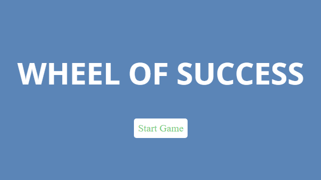

Back to Home
Wheel of Success
Project Summary
Wheel of Success is a web game similar to the rules of hangman. The objective is to guess the hidden phrase before you run out of hearts, which you lose whenever you incorrectly guess a letter.
Development
Details
Wheel of Success uses a list of phrases and randomly selects one at the start. Each letter in the phrase is placed inside a created node in the display. When a key is pressed, the phrase is checked to see if the letter exists in the phrase. Any node that has that letter is revealed. Once the key is pressed it is disabled so it cannot be accidentally selected again. If the letter is not found in the phrase, a heart is removed by updating the image. Once the game detects that you have missed the maximum number of times or all letters in the phrase have been revealed, the game ends and the results are displayed on the screen.
Challenges
One challenge was figuring out how to make the game replayable. Once a game was completed, the display had to be cleared of the phrase's letter boxes, the selected letters had to be accessible again, the start screen had to be reset, and the hearts had to return to full. Since the phrase elements are stored inside a list, it could be cleared by removing all the children of that list. For the keyboard, the letters gain the "chosen" class and are disabled so to revert it, all the keys with the "chosen" class should be enabled and have that class removed. For the start screen, the only things that change are the class list gaining "win" or "lose" and a text that displays either case is added to the HTML. So, "win"/"lose" class just has to be removed along with the added text element. Finally, for the hearts, their source images just need to be reverted to the live heart image and the missed variable returned to 0. Once all that was in place, the game was fully replayable without refreshing the page.